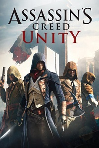

Год выпуска: 2014 г.
Жанр: Action, 3D, 3rd Person
Разработчик: Ubisoft
Издательство: Ubisoft
Платформа: PC
Тип издания: RePack
Язык интерфейса: Русский, Английский
Язык озвучки: Русский, Английский
Таблетка: Вшита (3DM v2, RELOADED)
Описание игры:
Новая глава Assassin’s Creed уже на пороге. Assassin’s Creed: Единство отправляет нас в революционную Францию и знакомит с молодым ассасином Арно Дорианом. События происходят в 1789 году в Париже, где тираны-аристократы уничтожают своих соотечественников более низкого класса. Однако этот хаос должен прекратиться, и Арно сыграет в этом деле не последнюю роль. Ему удалось узнать, кто стоит у истоков войны, и он намерен прекратить братоубийство.
Если вы осмелитесь игру assassins creed unity скачать с торрент то мы не просто станем свидетелями правдоподобных исторических событий, решающих судьбу Франции, но и примем в них непосредственное участие. Кстати, слово “мы” здесь уместно как никогда. Дело в том, что разработчики в дополнение к захватывающей одиночной кампании предусмотрели цепляющий кооперативный режим, рассчитанный на 4-х игроков. Теперь мы сможем насладиться мастерством сразу нескольких своенравных ассасинов.
Особенности Assassins Creed Unity на pc:
- Франция 18 века представлена весьма правдоподобно как в визуальном плане, так и в культурном. Все выглядит реалистично как никогда. Увидеть эту страну в этом времени удастся с самых разных сторон, выполняя различные контракты, расследуя убийства, участвуя в охоте за сокровищами, исследуя катакомбы, замки и дома простых жителей.
- Мир открыт и огромен, насладиться красотами Парижа можно вдоволь. Однако не стоит уклоняться от поставленной цели, для удачного выполнения которой предусмотрена полная свобода: четкий контроль движений героя, обновленная механика паркура, большой ассортимент одежды и оружия.
- Игра обзавелась новым деревом навыков, позволяющим развивать Арно всесторонне и создавать для него уникальные боевые комбинации. Кроме того, была улучшена система скрытных действий, обновлена механика боя и добавлены особые варианты управления толпой.
Cистемные требования:
Минимальные требования
Операционная система
Windows 7 SP1, Windows 8/8.1 (64-bit operating system required)